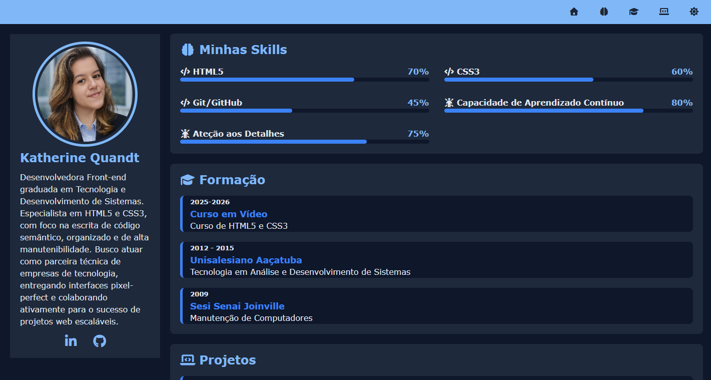

Katherine Quandt
Desenvolvedora Front-end graduada em Tecnologia e Desenvolvimento de Sistemas. Especialista em HTML5 e CSS3, com foco na escrita de código semântico, organizado e de alta manutenibilidade. Busco atuar como parceira técnica de empresas de tecnologia, entregando interfaces pixel-perfect e colaborando ativamente para o sucesso de projetos web escaláveis.
Minhas Skills
HTML5
70%
CSS3
60%
Git/GitHub
45%
Capacidade de Aprendizado Contínuo
80%
Ateção aos Detalhes
75%
Formação
2009
Sesi Senai Joinville
Manutenção de Computadores
2012 - 2015
Unisalesiano Aaçatuba
Tecnologia em Análise e Desenvolvimento de Sistemas
2025-2026
Curso em Vídeo
Curso de HTML5 e CSS3
Projetos

2025
Projetos de Vídeos
Projeto contruído para treinar a inserção de vídeos em nosso site.
Saiba mais...
Este foi o meu projeto de introdução ao HTML5, onde foquei na estruturação semântica e na organização de arquivos. Implementei a inserção de vídeos via <iframe>, criei um sistema de navegação interna com âncoras e links de retorno, e personalizei o site com favicons e esquemas de cores iniciais.
Conceitos Chave: Semântica HTML5, Links/Âncoras, Favicons e Incorporação de Mídias.

2025
Projeto Cordel
Projeto contruído para treinar efeito paralax em imagens.
Saiba mais...
Desenvolvi uma landing page focada em design e estética, utilizando o efeito Parallax. O foco principal foi o domínio da propriedade background-attachment: fixed, garantindo que a transição entre seções de texto e imagens criasse uma experiência imersiva para o usuário.
Conceitos Chave: Estilização de imagens de fundo, Tipografia e Psicologia das cores aplicada ao design.

2025
Projeto Android
Projeto contruído para treinar conteúdos e imagens dinâmicas.
Saiba mais...
Neste projeto, aprofundei meus conhecimentos em Semântica HTML5, utilizando tags como <header>, <nav>, <main>, <article> e <footer>. Foi o meu primeiro contato real com a responsividade, garantindo que o conteúdo se adaptasse bem a diferentes tamanhos de tela e que imagens dinâmicas fossem exibidas corretamente.
Conceitos Chave: Modelo de Caixas (Box Model), Elementos Semânticos e Imagens Dinâmicas.

2025
Projeto Redes Sociais
Projeto contruído para treinar responsividade e múltiplos media queries e divulgar as suas princiapis redes sociais.
Saiba mais...
O foco central aqui foi a adaptabilidade. Utilizei múltiplos Media Queries para reorganizar o layout dependendo da largura do dispositivo (Mobile, Tablet e Desktop). Trabalhei com a disposição de elementos em cartões para divulgar redes sociais, garantindo que a experiência do usuário fosse consistente e intuitiva.
Conceitos Chave: Media Queries, Mobile First e Design Adaptativo.

2025
Projeto Login
Projeto contruído para treinar responsividade e formulários em uma das telas mais populares em sistemas.
Saiba mais...
Apliquei conceitos avançados de formulários HTML5, utilizando tipos de entrada específicos, labels e validações básicas. O layout foi construído de forma responsiva, utilizando técnicas modernas de centralização e estilização de campos para garantir uma excelente Experiência do Usuário (UX) tanto em telas pequenas quanto em monitores grandes.
Conceitos Chave: Formulários avançados, Validação de dados, Pseudo-classes CSS e Layout Responsivo.

2026
Projeto Portfólio
Projeto contruído para treinar Flex Box, Grid Layout e Mobile First.
Saiba mais...
Este projeto representa o ápice do meu módulo de estudos de HTML5 e CSS3. Nele, apliquei a metodologia Mobile First, desenvolvendo primeiro para telas menores e expandindo para desktop de forma fluida. Utilizei CSS Grid Layout para a malha de projetos e Flexbox para componentes de navegação e alinhamento. Além disso, foquei em acessibilidade e performance, garantindo um código limpo e organizado.
Conceitos Chave: Flexbox, CSS Grid Layout, Mobile First, Variáveis CSS e Arquitetura de Projetos.